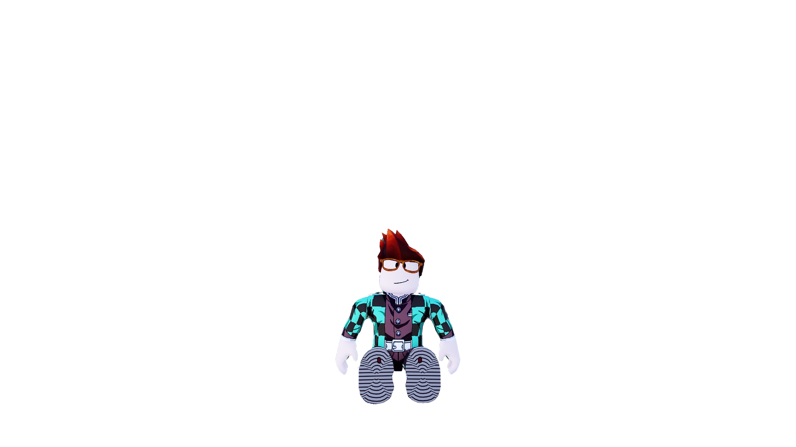

Click Tanjiro
สุขสันต์วันวาเลนไทน์นะอันอัน วันวาเลนไทน์คือวันแห่งความรักใช่มั้ย งั้นเขาขอให้อันอันได้รับความรักจากทุกคนรอบข้างเยอะๆนะ ทั้งจากครอบครัว เพื่อนๆ ทุกคนเลย ขอให้อันอันตั้งใจเรียนด้วยนะ จะได้เป็นเภสัชตามที่ฝันนะ เว็ปนี้อาจจะลวกๆนิดนึงเขาพึ่งว่างมาทำเลย555 ขอบคุณนะที่อันอันมาเล่นโรบ้อกกับเขาบ่อยๆเขาสนุกมากเลยแหละอิอิ แล้วก็ขอให้ทุกวันหลังจากวาเลนไทน์นี้เป็นวันที่ดีของอันอันนะ ยิ้มเยอะๆนะอันอันเพราะรอยยิ้มของอันอันสดใสที่สุดในโลกเลย